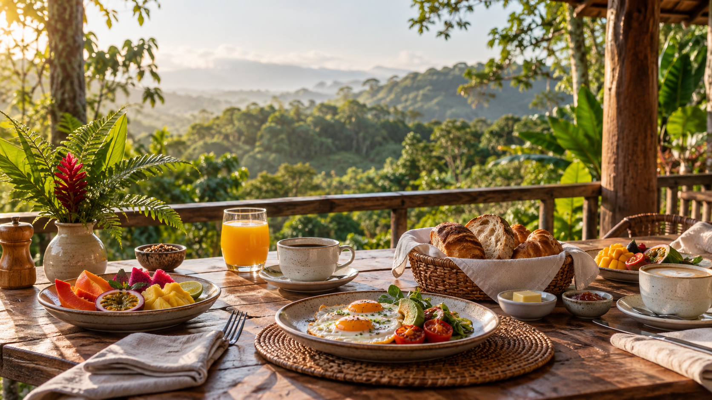
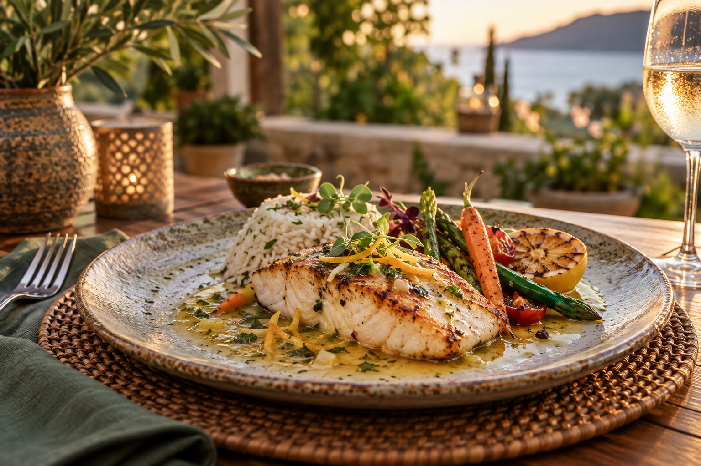
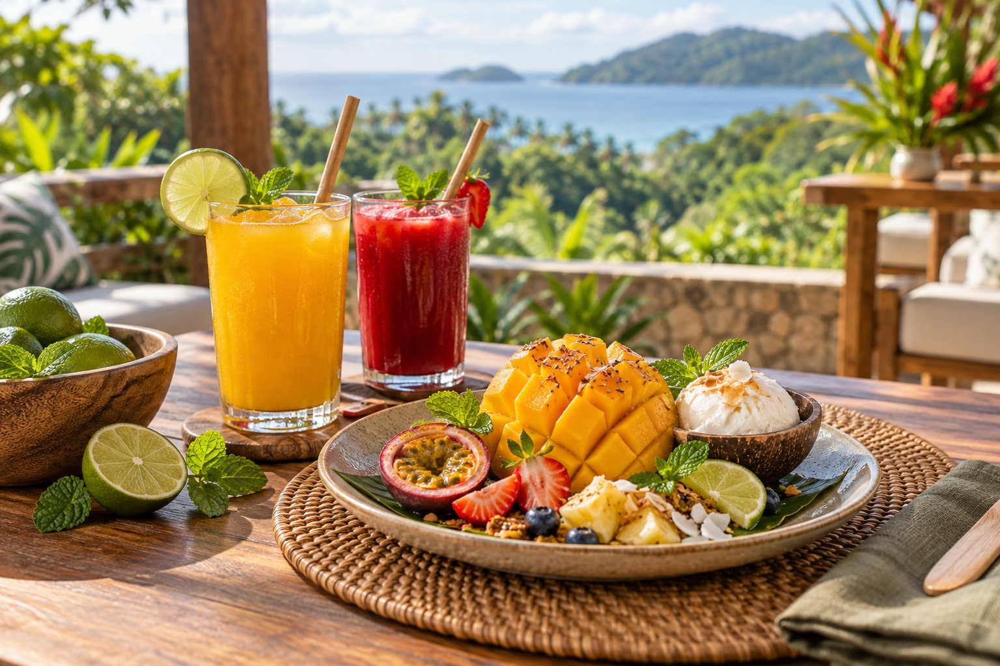

Desayunos
- Desayuno campestreHuevos, frijoles y pan artesanal
- Fruta de temporadaCon yogur y granola
- Hot cakes de la casaCon miel y fruta fresca
Sabores que acompañan tu viaje
Platillos preparados al momento con ingredientes frescos y el sabor de nuestra región.
Restaurante Oasis
Desde un desayuno energético antes de tu aventura hasta una cena tranquila al final del día, nuestro restaurante ofrece opciones para cada momento de tu estancia.



Contamos con alternativas vegetarianas y podemos adaptar platillos según tus necesidades.
Solicita tu lunch para disfrutarlo durante un tour o una excursión.
Pregunta en recepción por una experiencia especial para celebrar.
Atención personalizada
Avísanos al hacer tu reservación y nuestro equipo preparará una opción adecuada para ti.
Contactar al hotel